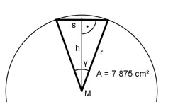

Aufgabe 27 Ein regelmäßiges 36-Eck hat eine Fläche von 7875 cm2. Wie groß ist der Radius r seines Umkreises?

360° y = ------ = 10° 36 h cos γ/2 = --- | *r r h = cos γ/2 * r s/2 sin γ/2 = ----- |*r r r * sin γ/2 = s/2 |*2 s = 2 * r * sin γ/2 s * h A = 36 * ------- 2 2 * r * sin γ/2 * cos γ/2 * r A = 36 * ------------------------------- 2 A = 36 * r2 * sinγ/2 * cos γ/2 |:36 A --- = r2 * sin γ/2 * cos γ/2 |:sin γ/2 36 A -------------- = r2 * cos γ/2 |:cos γ/2 36 * sin γ/2 A r2 = ------------------------- = 36 * sin γ/2 * cos γ/2 7 875 cm2 = -------------------------- = 2518,2 cm2 36 * 0,0872 * 0,9962 r = √2518,2 = 50,2 cm